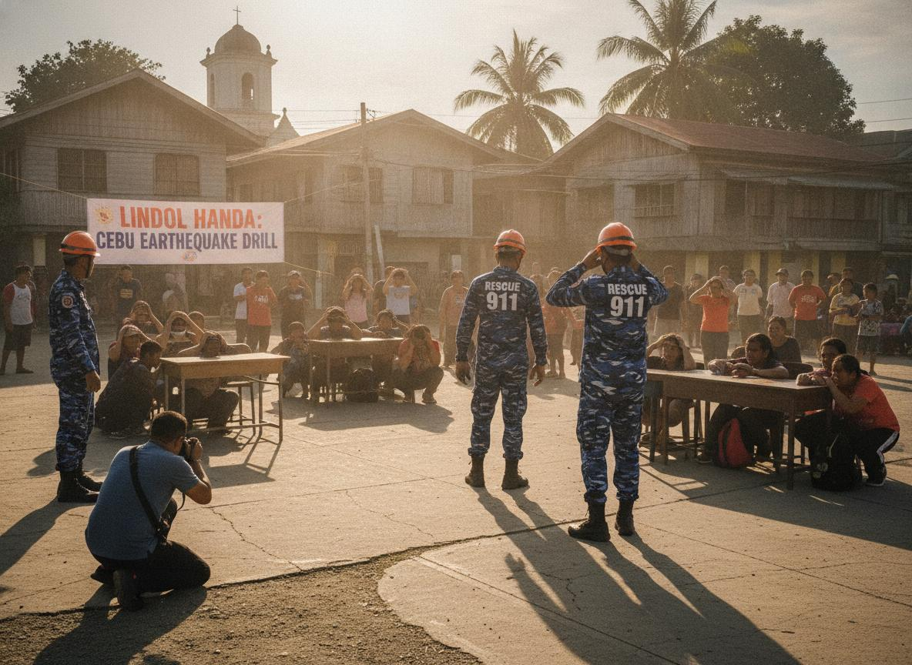
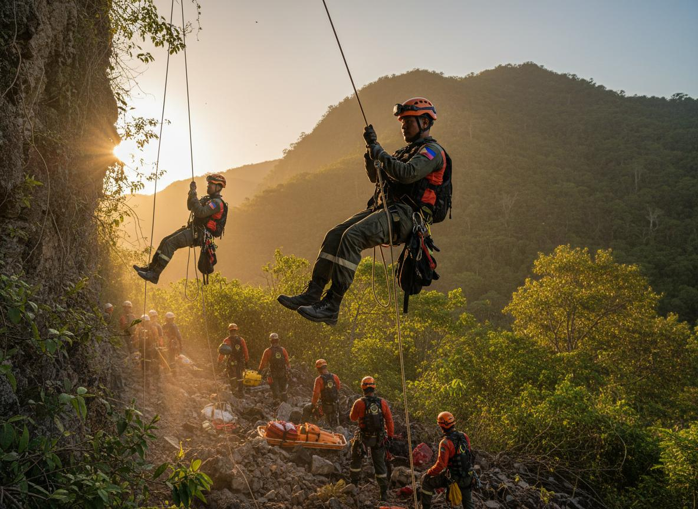
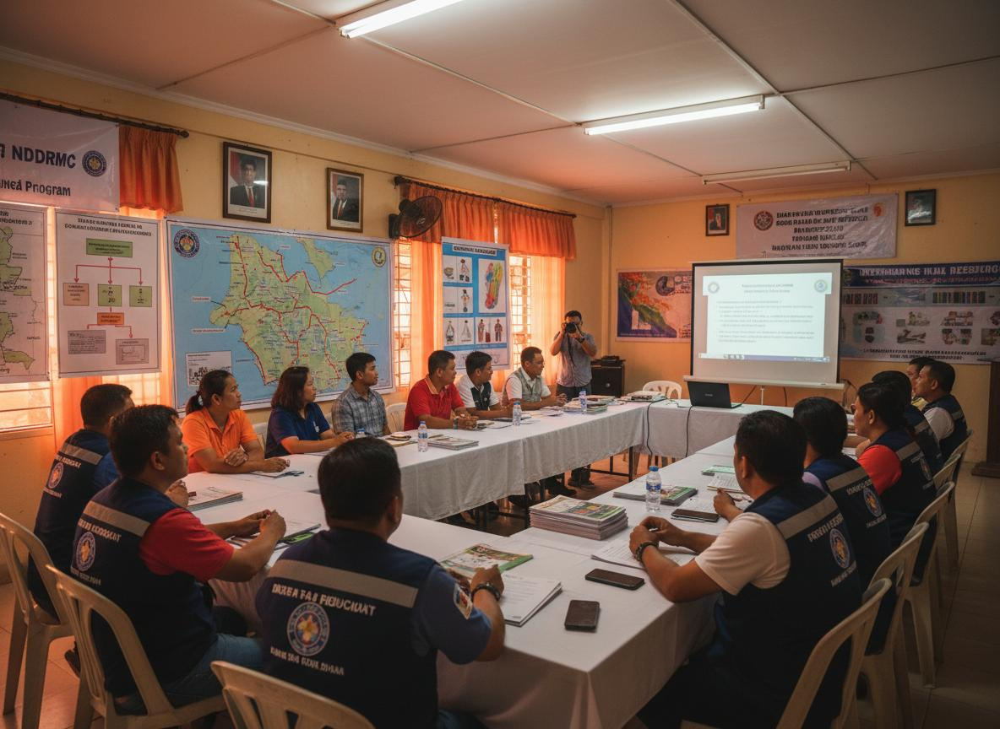

January 10, 2024
CDRRMO Conducts Earthquake Drill in Barangay Cantabaco
Barangay residents actively participated in the quarterly earthquake drill, practicing the Duck, Cover, and Hold procedure.
The Toledo City CDRRMO is committed to proactive disaster risk reduction, timely warnings, and rapid emergency response for every resident across all 38 barangays.
Stay informed and prepared with real-time monitoring tools and resources.
Real-time weather updates and wind monitoring for Toledo City and surrounding areas.
View WeatherSeismic activity monitoring and barangay-specific hazard mapping for all 38 barangays.
View HazardsFind the nearest evacuation center for your barangay with interactive maps.
Find CentersServing the entire Toledo City community with dedication and commitment.
News and activities from the Toledo City CDRRMO.

Barangay residents actively participated in the quarterly earthquake drill, practicing the Duck, Cover, and Hold procedure.

Twenty new QRT members graduated from intensive search and rescue training, expanding our emergency response capacity.

Representatives from all 38 barangays participated in the annual disaster preparedness and planning workshop.
Know your evacuation center, understand your barangay's hazard profile, and keep emergency numbers accessible.